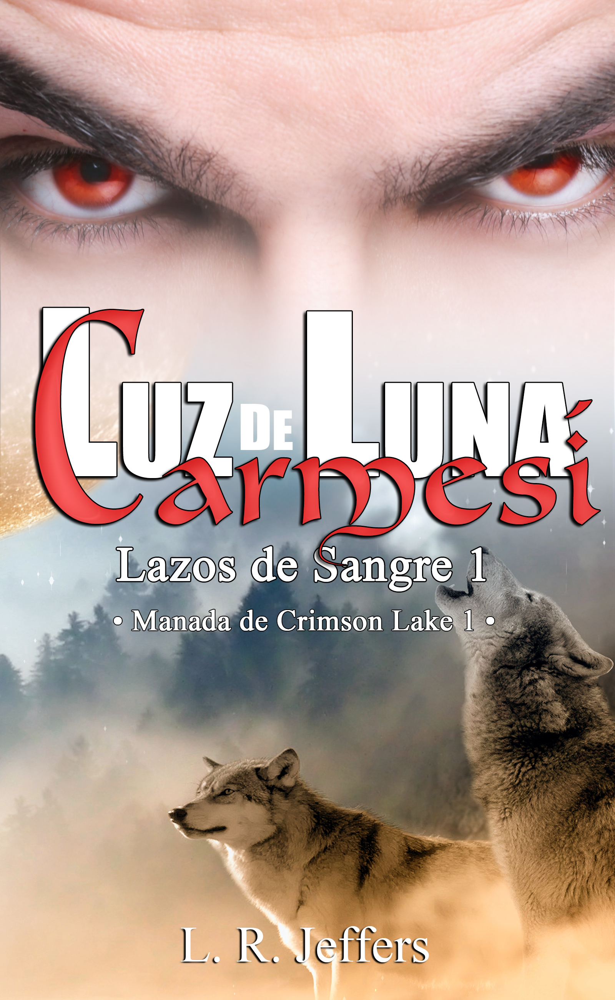

Luz de luna carmesí
«Déjame ser como soy, en una eternidad a tu lado.»
También disponible en formato digital y papel.
Sinopsis
A sus treinta años, Rhys Crimson Badmoon tiene una vida maravillosa planeada. Aunque no por él. Habiendo nacido como cambiaformas y siendo el único lobo rojo gigante visto en los últimos quinientos años, todos esperan que sea perfecto: feroz, poderoso, inconmovible y letal. Eso es todo lo que un Alfa pura sangre como él podría ser.
Comprometido con la primogénita del clan Pardo del Sur y habiendo tomado el control de la manada más poderosa del país, él está tratando de mantenerse de pie. O eso cree. Pero cuando Arian Snow Blackheart decide volver luego de trece años de exilio, Rhys siente el inconfundible llamado del apareamiento.
Esto estaría bien si Arian no fuera una paria: el bastardo albino de un inclemente lobo negro y un débil e inútil Omega indeseable. Aún más, eso tampoco sería un problema si no fuera otro hombre.
Sin embargo, Arian no es el mismo debilucho que Rhys recuerda. Más alto y lleno de músculos, es la cosa más sexy que hubiera visto en su vida. Y cuando su lobo decide que quiere reclamarlo, Rhys no tiene opción más que obedecer.
Leer extracto gratuito
Capítulo 1
Rhys refunfuñó un par de maldiciones. Arian lo miró bajo la luz del caliente sol de mediodía que solo realzaba el tono cobrizo de su piel; él continuaba viéndose como en el pasado. Este era el Rhys de sus recuerdos: alto y fuerte, masculino, sexy. Con ese inusual par de ojos carmesíes que le concedieron su nombre. No el humano, sino el que le era otorgado a cada miembro de la manada al nacer: el del lobo en su interior.
Él era Snow, debido a su defecto; aunque Rhys fue el único en hacerle sentir como si fuera normal.
—Él pudo matarte.
Arian ladeó la cabeza, sin entender. ¿De qué estaba hablándole? Ah, mierda, eso pasaba por distraerse en el momento menos indicado.
—¿Qué?
Rhys bufó.
—Bane —dijo, aún con su tono duro—. Él pudo haberte matado. ¿Por qué retaste a mi Beta así? ¿Estás malditamente loco?
No quiso, pero se rio de sus palabras. ¿Acaso no lo estaba viendo? Él no era el mismo enano debilucho al que Jude Badmoon echó de la manada, solo por ser el amigo de su hijo. Una distracción. El Omega indeseable que avergonzaba al gran lobo rojo.
Un paria.
Se colocó la chaqueta y metió las manos dentro de los bolsillos.
—Lo dije en serio, Crim: he almorzado bestias más grandes y peligrosas que él.
El rostro de Rhys pasó del enojo a la sorpresa absoluta y luego... dolor.
—¿Qué pasó contigo?
Le regaló una sonrisa triste.
—Crecí, me hice fuerte. ¿No te dije que lo haría?
Rhys sacudió la cabeza, negando. El aroma del Alfa le llegó. Dulce, cálido y picante. Quería un poco de eso. Lo necesitaba. «¡Mío!». La voz necesitada de su lobo cortó desde lo más profundo. Él estaba gimiendo de necesidad. Oh, cielo santo, solo quería sentirlo. ¿Estaría tan mal restregarse sobre Rhys, tan solo un poco?
Él sabía que no sería bien visto en la manada. Era Omega y otro hombre. Nadie iba a aceptarlo, ni siquiera Rhys. No obstante, ellos estaban conectados, podía sentirlo ahora más que nunca. Y el infierno se congelaría antes de que él renunciara.
El Alfa era suyo, así como él le pertenecía.
—Snow...
—Lo sabes, ¿verdad?
Despacio, Rhys asintió.
—Pero yo no puedo.
—¿Por qué?
Sus ojos mortificados fueron como una patada en la ingle. Antes de que lo dijera, Arian supo la respuesta. Y cuando Rhys habló, él se quedó sin aliento:
—Estoy comprometido y eres Omega —dijo—, eso te hace débil, aunque hayas crecido y puedas luchar. Eres inferior y defectuoso. Pero sobre todo, Snow, eres macho. Yo simplemente no podría...
Sus ojos ardieron. Arian parpadeó, alejando las lágrimas que amenazaron con salir.
—Entiendo. —Fingió una sonrisa amable—. Me enteré de lo de tu padre y vine a darte mis condolencias... Un poco tarde, ¿eh? Algo así como diez años. Como sea, ya me voy.
—Snow, lo lamento.
—No, tú no lo haces, y yo tampoco. —Se rio—. Ten una buena vida, Alfa. Felicidades por lo de tu boda.
—Snow...
Arian respiró hondo, tragándose el molesto nudo en su garganta. ¿Por qué deseaba tanto llorar? Él se lo había prometido, jurado frente a la tumba de su tía Laila, la suave Breeze, que no volvería a hacerlo. Por nadie. Jamás. Pero, maldita sea, el desprecio de Rhys dolía. No solo porque era su amigo, la persona a la que siempre deseó volver, sino su pareja. El compañero que el Destino le otorgó. Y le había echado en cara la única cosa sobre la que no tenía control ni podía cambiar: era hombre y Omega. Una especie de maldición entre los de su clase. Eso, al parecer, era incluso peor que su albinismo.
Y mientras se veían uno al otro en silencio, Arian se preguntó si él habría estado mintiéndole durante los años de infancia. Todas las veces en las que lo consoló, diciéndole que no había nada malo en él. «Eres un lobo, como el resto de nosotros, Snow». Su voz amigable vino como un doloroso recuerdo. ¿Realmente lo habría creído o solo fue lástima? En retrospectiva, parecía que sí. El poderoso Crimson Badmoon solo fue su amigo por compasión. Y entenderlo resultó más doloroso que los años de castigos injustificados. Él prefería los golpes y las humillaciones a la lástima. Sin embargo, él ya no era débil. Podía defenderse a sí mismo.
Y no lloraría.
—Snow, tú no ent...
Sacudió la cabeza, negando. No la aceptaría ahora. No más. Los años de exilio le habían enseñado cómo resistir. Su mentor lo había hecho. De no ser por él, no existiría. Su maestro le había mostrado cómo ser fuerte y luchar, resistirse al jodido Alfa, ser independiente.
No ser Omega.
—¡Cállate, mierda! No soy el cachorro que tu jodido padre echó. Ya no voy a derrumbarme, llorando por la puta que me dejó tirado y no volvió por mí. No voy a inclinar la cabeza ni presentar mi cuello. —Se rio amargamente—. Tú y tu maldita manada pueden irse a la mierda. Vine aquí por mi amigo, pero al parecer se convirtió en una versión joven de su padre y no sabes lo mucho que me repugna.
Él parpadeó, confundido y asombrado. Oh, sí, el lobo rojo se llevaría más de una sorpresa.
—¡No soy como mi padre!
Arian se burló.
—Oh, pero lo eres. —Se llevó los dedos índice y medio a la frente, y los movió como despedida—. Alfa.
Rhys no hizo ni un movimiento cuando Arian giró sobre sus pies y comenzó a andar. Aunque su lobo gimoteó por él, como un mimado cachorrito, se contuvo. No podía hacerlo, no cuando Arian era Omega. No tratándose de otro hombre.
«Soy un idiota». Y había jodido la situación al utilizar lo único que fue capaz de herir a su amigo por años, en su contra. Él no pensaba nada de eso. Le importaba una maldita mierda, pero entró en pánico cuando Arian le preguntó si se había dado cuenta de su vínculo. El Lazo de Sangre con el cual el Destino los unió. Él no podía aceptarlo, no quería.
Pero ahora, después de haber oído esas duras palabras, comenzó a cuestionarse el porqué. ¿En realidad había demasiado de Jude dentro de sí mismo? Quizá eso que hablaba no eran sus propios temores, sino los de su padre. A lo mejor el antiguo Alfa lo había envenenado, tal como hizo con Kean, su hermano menor. Y al pensarlo de ese modo, Rhys entendió que no sabía quién era en el fondo. ¿Trataba realmente de cambiar las cosas dentro de la manada? ¿Lo hacía por Arian o por sí mismo?
«Compañero». Su lobo aulló de dolor por él, inmerso en su completa agonía. Rhys, no obstante, lo dejó marchar. Él iba a casarse con Selene. Fin de la historia.
💡 Este extracto representa aproximadamente el 10% del libro. Para continuar la historia, disponible en Amazon →
El fuego que arde en Crimson Lake

Rhys nació un 10 de agosto, en pleno corazón del verano, bajo el signo de Leo. Y no hubiera podido ser de otra manera. Su presencia llena la habitación, tan cálida como dominante, con una mirada que brilla como el fuego mismo.
Muchos pensarían que, por ser el primogénito del Alfa y su heredero, lo ha tenido fácil. Nada más alejado de la realidad. Rhys tenía apenas 3 años cuando fue arrebatado de los brazos de su madre y la vio encerrada en Blood Moon Ridge, conocido como «La prisión de la Luna», un paraje escabroso donde los acantilados se alzan como garras de piedra y los árboles retorcidos parecen sombras demoníacas listas para robar tu alma. Inmediatamente, comenzó su entrenamiento.
Si bien Rhys siempre tuvo dos personas protegiéndolo —y dándole el amor que necesitaba, a pesar de sus propias limitaciones—, Rhys jamás contó con el cariño, la protección ni mucho menos la aprobación de su padre. Lo supo desde el principio: no era nada más que un arma que se perfeccionaba por medio del dolor para ser usada en contra de los enemigos. Y saberlo, aunque liberador, no dejó de ser doloroso.
Tenía 10 años cuando Arian llegó a su vida. Entonces Rhys ya intentaba ser fuerte, pero él fue como un pequeño rayo de luz de plata que le dio el valor para no rendirse. Sin embargo, cuando él se marchó, Rhys tuvo que aprender a vivir con el dolor de su ausencia.
Ahora, a los 31 años, es un líder serio y firme. Ya no busca aprobación como cuando era niño; ahora busca proteger a los suyos, aunque eso le cueste su propia paz. Esa fortaleza, no obstante, es también su jaula. Rhys lucha constantemente con la sombra de su padre y con la necesidad desesperada de sentirse amado. Muestra una fachada impenetrable, pero por dentro tiene una sensibilidad que unos pocos (o quizás solo uno) pueden tocar.
Rhys es un «sobreviviente destrozado». Y tal vez por eso Broken Survivor, de Beast In Black es su canción favorita. Su conflicto más grande es la autoaceptación. Ha pasado tanto tiempo siendo fuerte para los demás que a veces olvida quién es él sin el peso del liderazgo.
El reencuentro con Arian no es solo un choque de personalidades; es un terremoto que lo obliga a confrontar heridas antiguas y a preguntarse si puede permitirse un amor que desafía todas sus inflexibles reglas.
👉 Escucha la Playlist de Rhys en SpotifyContenido exclusivo para lectores de la web y suscriptores de Patreon.
El corazón de invierno de Crimson Lake

Arian nació bajo el signo de Capricornio durante uno de los más crueles inviernos en Ivory Peaks. Desconoce el día exacto, sin embargo, le fue otorgado uno: el 22 de diciembre. No podría ser más acertado. Arian es una criatura de tierra, de resistencia, pero marcada inevitablemente por el frío.
Siendo apenas un «cachorro» de 5 años, tuvo que enfrentarse a las peores calamidades. Caminó desnudo por el infierno y, con cada paso, sus pies sangraron; aun así, mantuvo su alma pura, su actitud dulce y su timidez. En un mundo normal, Arian habría sido de esos niños que se esconden detrás de las piernas de los adultos y te miran un segundo antes de volver a ocultarse. Sin embargo, en Lazos de Sangre, a los pequeños no siempre se les permite conservar esa inocencia.
Con tan solo 12 años y después de haber padecido lo innombrable, fue forzado a abandonar Crimson Lake. Dejó atrás todo lo que conocía... incluyendo a Rhys.
Por desgracia, su vida no mejoró y el Arian que regresa a los 25 años ya no es ese niño asustadizo. O al menos, eso es lo que él quiere que el mundo crea.
Si se cruzaran con él en las calles de Crimson Lake, lo primero que notarían es su mirada intensa de profundos ojos azul hielo y esa piel pálida que parece no haber visto el sol jamás. Pero no se dejen engañar por su apariencia. Arian es rápido, cortante y a veces un poco cruel. Usa el sarcasmo como un escudo para que nadie vea que, en el fondo, sigue siendo ese «Snowy» que solo buscaba ser amado.
Aunque la verdad es que su sarcasmo es una forma de ternura disfrazada. Solo aquellos que tengan la paciencia de derretir el hielo verán lo que hay debajo. Porque su mayor conflicto es la herida del abandono. Carga con el miedo constante a no pertenecer, a ser el extranjero en cualquier lugar.
«La canción que define su alma es Dance With You, de Brett Young. Esa mezcla de romanticismo y su devoción por Rhys. De la profundidad de su amor que, en ocasiones, puede asustar un poco.»
Escucha la Playlist de Arian en SpotifyContenido exclusivo para lectores de la web y suscriptores de Patreon.